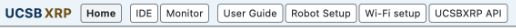
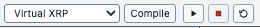
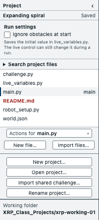
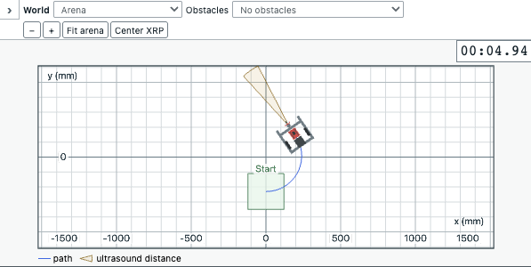
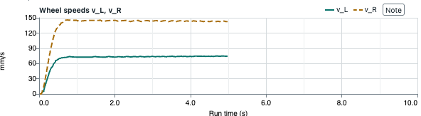
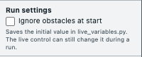

ME179: Wheeled Mobile Robotics
Programming and testing the XRP
-
Robot behavior
- UCSBXRP: web app for programming Virtual XRP and Physical XRP robots; observing movement and sensor readings; improving behavior through experiments
- Motion, sensing, and decisions combined in Python: driving forward, turning, stopping near an obstacle, following a line, reaching a destination
- Programmed motion compared with observed motion; measurements used to explain the difference and improve the next trial
-
Home, IDE, and Monitor
- Home: starting page, with access to robot programming, measurements, setup, and help
- IDE: writing and running Python robot programs; Monitor: watching robot movement and examining measurements
- Side by side: program alongside robot path, readings, and plots; connection between a motion command and the resulting movement

-
Virtual and physical XRP
- Virtual XRP: simulated motors and wheels responding to the program; encoders measuring wheel rotation; range sensor responding to obstacles; floor sensors responding to lines
- Physical XRP: same program driving the robot's motors and reading its sensors
- Virtual trials for developing and comparing robot behaviors; physical trials for examining wheel slip, motor differences, surfaces, and battery condition
Programming motion
-
Robot programs and projects
- Project: program and arena for one robot experiment; Working folder: local location for Projects and recorded runs
- IDE editor: wheel commands, sensor-based decisions, and repeated control adjustments
- Project file list: assigned code and README.md, describing the robot task and work to complete
- Program output: printed observations, task results, and execution errors

-
Compile, Run, Stop, Reset
- Compile: checking Python files before an experiment; errors identifying code needing correction
- Run: executing the program on the selected XRP; wheel motion and sensor readings developing during execution
- Stop: ending the program and stopping robot motion
- Reset: returning Virtual XRP to its initial position and heading for another trial

-
Demonstrations
- New project…: separate Project from a demonstration, tutorial, or assigned challenge
- Expanding spiral: forward motion combined with gradually decreasing turn rate; increasingly broad curved path
- Obstacle turn: forward travel, range-based obstacle detection, and a turn; sensor reading connected to a change in movement
- Example program, predicted behavior, and observed path as starting points for a revised experiment
Robot and arena
-
World view
- Virtual XRP, Monitor World: robot moving among floor lines, obstacles, and destination markers; path showing where the robot has travelled
- Path compared with intended motion: drift during straight travel, an overshot turn, arrival at a destination, or collision with an obstacle
- Arena and obstacle choices for testing behavior under different conditions; zoom and Fit arena for examining the path

-
Robot measurements
- Live telemetry: current readings during a run; wheel speeds alongside visible movement; forward range during obstacle approach
- Encoders: wheel rotation used to estimate travel and speed; floor reflectance: light/dark readings used to detect a line
- Measurements connected to decisions in the program: maintaining wheel speed, correcting line tracking, or slowing near an obstacle

Wheel response
-
Motion plots
- Plots: measurements over time, connecting motion commands to robot response
- Requested and measured wheel speeds together (Show target values): speed buildup, sustained error, or repeated fluctuations around the request
- Similar left/right wheel-speed requests for straight travel; different requests for turning; measured speeds showing controller response
- Range alongside motion for examining obstacle approach, onset of slowing, and stopping; selected interval for closer examination of a turn or stop

-
Adjusting robot behavior
- Live controls: settings exposed by the running program; adjustments while watching robot movement and measurements
- Response before and after a change: effects on speed, turning, line tracking, or stopping
- One change at a time, with an expected effect; path and plots as evidence of the resulting response

Robot experiments
-
Recording and comparing trials
- Automatic recording of measurements during each run; completed trials available after the robot stops
- Notes: observations attached to moments in the run, such as beginning a turn or reaching an obstacle
- Open saved run…: earlier trajectory and plots for comparison with another trial
- Comparison under similar starting conditions: changed behavior, stopping location, wheel-speed response, or route tracking

-
Using recorded data
- Saved path and plots for examining what happened during the experiment
- Export run data (ZIP): measurements, program output, and run summary for analysis; Include code in ZIP for the program used in that trial
- CSV data for quantitative comparisons; plot images and world animation for presenting observed robot behavior

Sensing and navigation
-
Robot code
-
Measuring wheel motion:
SensorProcessor, converting encoder readings into wheel travel and speed -
Regulating wheel speed:
WheelSpeedController, adjusting motor effort using requested and measured speeds -
Driving and turning:
DifferentialDrive, coordinating left and right wheel speeds -
Estimating movement:
Odometry, using wheel travel to estimate robot position and heading -
Reaching destinations:
NavigationController, steering toward a destination;GridPlanner, finding a route around mapped obstacles
-
Measuring wheel motion:
-
Testing robot behavior
- Project README.md: task, assigned sensing or control code, and checks
- Test functions: calculations checked against known cases; results in Program output
- Predicted movement before a virtual trial; observed path, sensor readings, and plots afterward
- Revised code followed by another trial; comparison of stopping, wheel-speed stability, or route tracking

-
Programming help
- User Guide: explanations of robot programming, experiments, recordings, and setup
- UCSBXRP API: Python classes and functions for wheel control, sensing, navigation, and planning; reference for assigned robot code
-
Challenges
- Assigned robot tasks combining sensing, motor control, and navigation in a working solution
- Robot movement and recorded measurements compared with task requirements; working sensing and control code reused in later tasks
Appendix: Physical XRP setup
-
Working folder
- Open Robot Setup; choose Open existing Working folder… for current class work, or Set up fresh Working folder for first use
-
Connect the XRP
- Keep wheels raised during setup; switch XRP off, connect USB-C data cable, then switch XRP on
- Choose connected XRP; select intended controller in device picker, possibly listed as Board in FS mode; Connect this XRP for a recognized controller

-
Prepare the robot and firmware
- Follow wizard; Install course firmware, if requested: select temporary RP2350 drive's top level, containing INFO_UF2.TXT; wait for copy completion and drive disappearance; Select restarted XRP
- Continue to Class Wi-Fi and Prepare XRP; keep USB connected and setup page open through completion
-
Verify wireless operation
- Battery power on; unplug USB-C; join computer to network named on setup page; allow local-network access if requested
- Check wireless connection; wait for Robot setup is complete; choose Open IDE
Appendix: Spiral on the XRP
-
Open the spiral Project
- Open existing Expanding spiral Project, or New project…, select Expanding spiral, enter name, and Create
-
Prepare the program
- Select Physical XRP in Run on; choose Compile; correct reported errors
-
Prepare a brief floor trial
- Instructor approval; starting position and heading from Project README.md and world.json; clear floor and room for curved travel
- Wheels stationary before Run; keep Ignore obstacles at start unchecked; plan a five-second trial with Stop immediately accessible

-
Run and stop
- Choose Run; watch physical movement and Monitor wheel speeds; choose Stop after five seconds, or earlier as needed; confirm wheels stopped
- Wheels continuing after Stop: switch XRP power off
- Obstacle stopping dependent on a usable ultrasound echo; manual Stop available throughout the trial
-
Review the trial
- Inspect wheel-estimated path, wheel-speed plots, and Program output; add Notes for observations; compare with the virtual spiral
Later sessions: XRP power on; computer on class Wi-Fi; same Working folder open; Wi-Fi setup → Test Wi-Fi → Return to IDE before running.